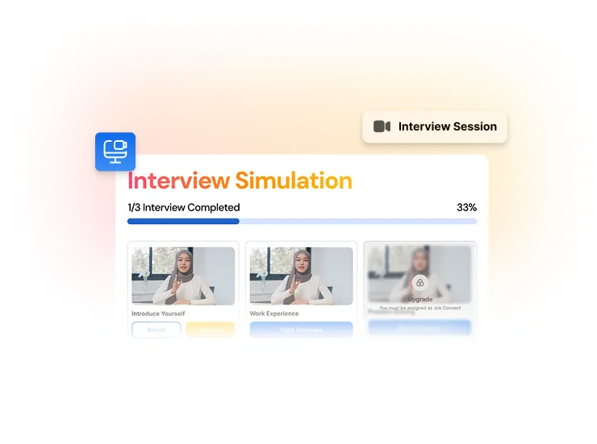
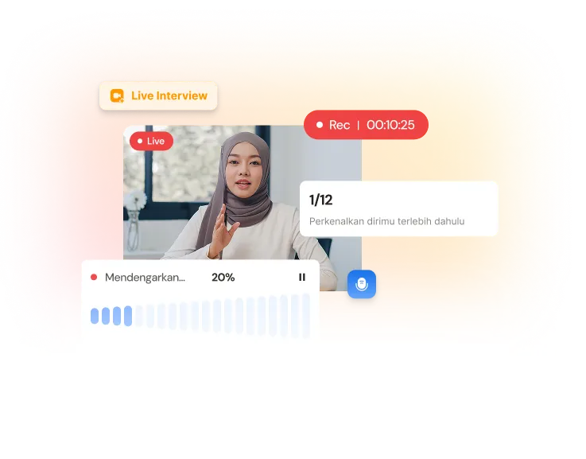
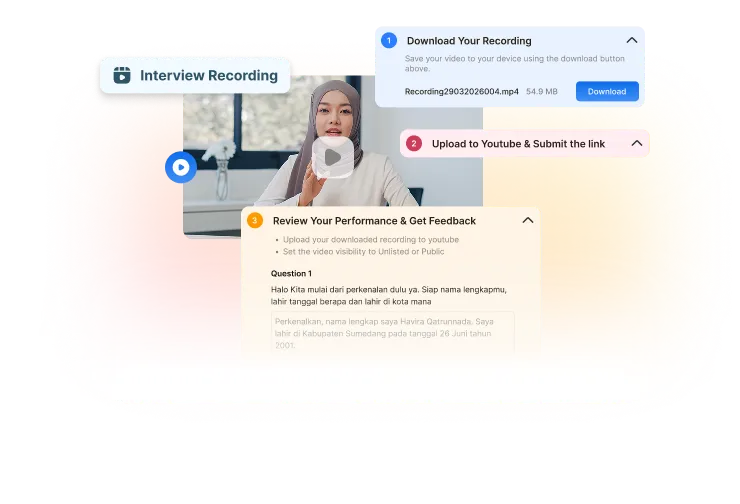
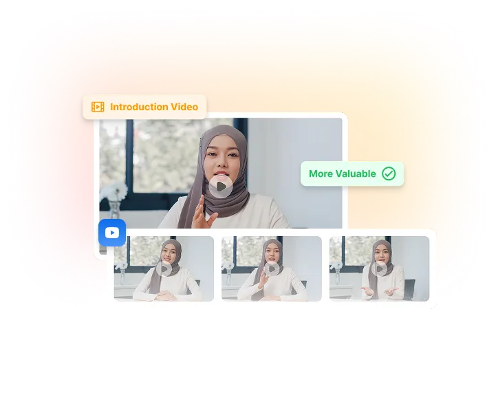
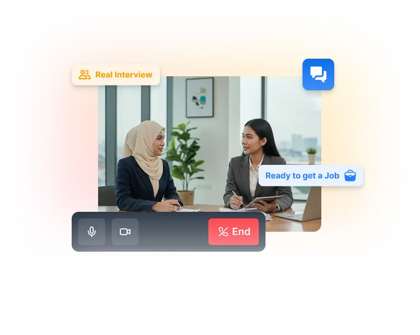

Persiapkan Dirimu Dengan
Simulasikan sesi interview secara realistis dan dapatkan feedback untuk meningkatkan kepercayaan diri serta kualitas jawabanmu.
Banyak kandidat gagal interview bukan karena tidak kompeten, tapi karena:
Banyak kandidat belum terbiasa menghadapi pertanyaan interview.
Rasa tegang membuat penyampaian jawaban menjadi kurang lancar.
Banyak kandidat belum tahu cara menceritakan pengalamannya secara relevan dan menarik.
Kandidat sering menyampaikan jawaban secara acak tanpa alur yang jelas.
Interview Simulation membantu kamu berlatih dalam kondisi yang menyerupai interview nyata dan memberikan evaluasi untuk meningkatkan performa.
Persiapkan Interviewmu
Tentukan jenis wawancara yang ingin kamu latih sesuai dengan kebutuhan dan tujuan kariermu.


Rasakan pengalaman interview yang lebih nyata dengan berbagai kategori pertanyaan.
Kamu dapat melihat kembali rekaman simulasi untuk mengevaluasi performamu secara mandiri.


Rekaman interview kamu akan otomatis ditampilkan sebagai introduction video.
Lakukan simulasi interview untuk meningkatkan kepercayaan dirimu saat interview sesungguhnya.

Dapatkan pengalaman kerja nyata, bangun portfolio yang membuatmu menonjol, dan terhubung dengan peluang kerja. Semua hanya dengan Rp 180.000
Slot Terbatas! Harga Promo Khusus Bulan Ini!